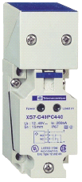
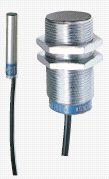
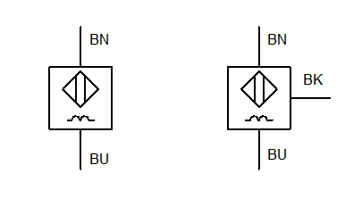
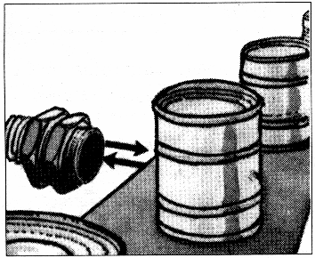
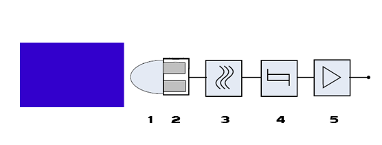

|
Les capteurs Tout Ou Rien |
Les capteurs de proximité inductifs permettent de détecter tout objet métallique qui se trouve à proximité de la tête de détection.
   
Un capteur inductif se compose essentiellement d'un oscillateur.
Le champ électromagnétique est crée à l'avant de la face sensible.
Toute pièce métallique pénétrant dans ce champ devient le siège de courants de Foucault qui provoquent l'arrêt des oscillations.
C'est donc l'arrêt des oscillations qui est détecté.


1 : champ magnétique 2 : bobinages 3 : oscillateur 4 : traitement du signal 5 : amplification du signal
Il comporte un oscillateur (3) dont les bobinages constituent sa face sensible et un étage de sortie.
L'oscillateur crée en avant de la face sensible un champ électromagnétique alternatif ayant une fréquence de 100 à 600 kHz selon le modèle.
Lorsqu'un objet conducteur pénètre dans ce champ, il est le siège de courants induits circulaires qui se développent à sa périphérie.
Ces courants constituent une surcharge pour le système oscillateur et entraînent de ce fait une réduction d'amplitude des oscillations au fur et à mesure de l'approche de l'objet, jusqu'au blocage complet.
La détection de l'objet est effective lorsque la réduction de l'amplitude des oscillations est suffisante pour provoquer un changement d'état de la sortie du détecteur.
Créé avec HelpNDoc Personal Edition: Générateur de documentation complet